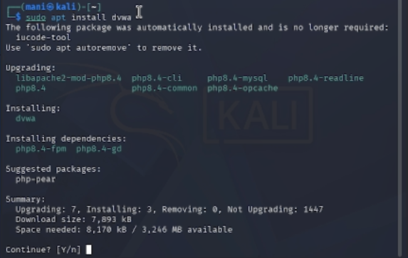
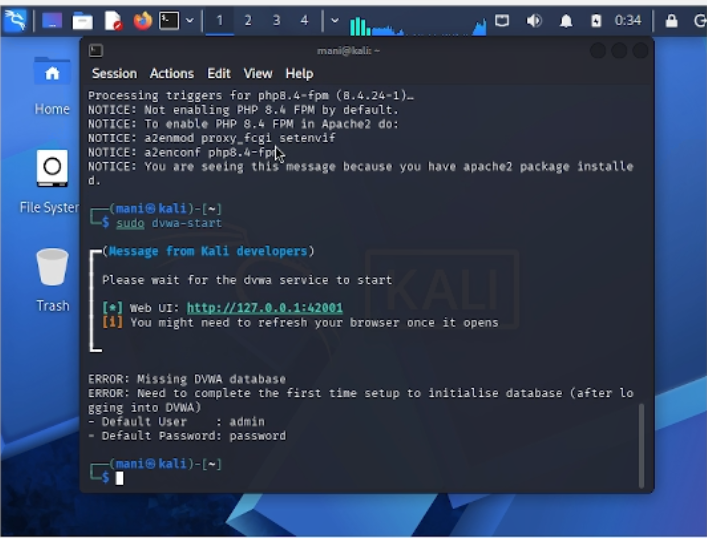
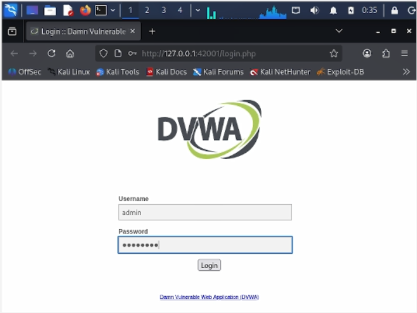
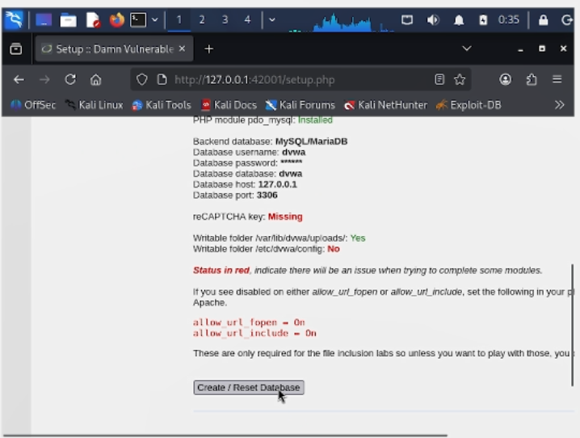
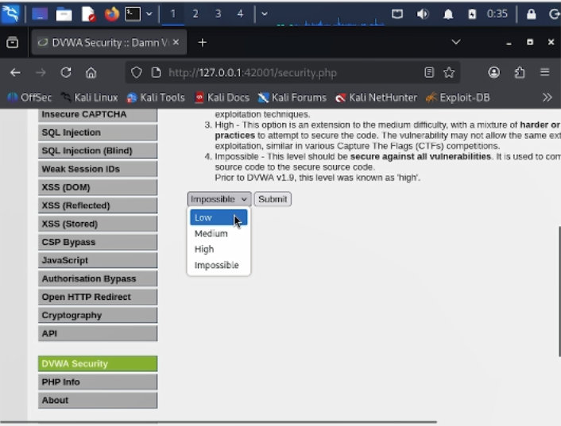

6.октябрь.2026
Установить и настроить DVWA (Damn Vulnerable Web Application) в гостевой системе Kali Linux для последующего изучения и эксплуатации уязвимостей веб-приложений.
В терминале Kali Linux выполняем команду
sudo apt install dvwa для установки DVWA из стандартного
репозитория. Установщик автоматически загружает и устанавливает
необходимые зависимости: PHP 8.4, libapache2-mod-php8.4, php8.4-mysql и
другие компоненты.

Рис. 1 — Установка DVWA через пакетный менеджер apt
После установки запускаем сервис командой
sudo dvwa-start. Скрипт автоматически запускает веб-сервер
Apache и базу данных MariaDB. В терминале отображается сообщение о том,
что веб-интерфейс доступен по адресу
http://127.0.0.1:42001. Также выводится предупреждение о
необходимости завершить первичную настройку базы данных и указываются
учётные данные по умолчанию: логин admin, пароль
password.

Рис. 2 — Запуск сервиса DVWA и получение адреса веб-интерфейса
Открываем браузер и переходим по адресу
http://127.0.0.1:42001/login.php. На странице входа вводим
учётные данные по умолчанию: имя пользователя admin и
пароль password, после чего нажимаем кнопку «Login».

Рис. 3 — Страница входа в DVWA
После входа система перенаправляет на страницу
setup.php, где необходимо создать базу данных. Проверяем
параметры подключения: база данных MySQL/MariaDB, имя пользователя
dvwa, пароль dvwa, имя базы данных
dvwa, хост 127.0.0.1, порт 3306.
Статус модуля PHP pdo_mysql — «Installed». Нажимаем кнопку
«Create / Reset Database» для инициализации базы данных.

Рис. 4 — Первоначальная настройка и создание базы данных DVWA
После успешного создания базы данных переходим на страницу «DVWA Security». В выпадающем списке выбираем уровень безопасности «Low» и нажимаем «Submit». Уровень Low означает, что все уязвимости полностью открыты и не имеют защиты — это идеальный вариант для обучения базовым техникам эксплуатации.

Рис. 5 — Установка уровня безопасности Low
В ходе выполнения индивидуального проекта была успешно установлена и
настроена уязвимая веб-платформа DVWA в среде Kali Linux. Пакет был
установлен из стандартного репозитория, база данных инициализирована
через веб-интерфейс, выполнена авторизация с учётными данными по
умолчанию. Установлен уровень безопасности Low, что позволяет приступить
к изучению и практической эксплуатации уязвимостей веб-приложений:
брутфорса, SQL-инъекций, XSS, CSRF, внедрения команд и других. DVWA
доступна по адресу http://127.0.0.1:42001 и готова к
использованию в последующих лабораторных работах.